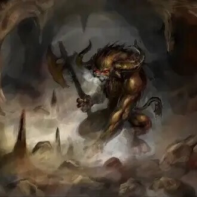
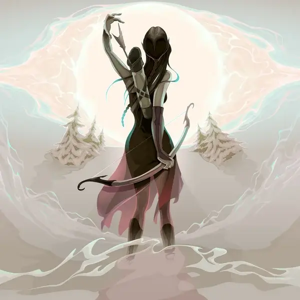
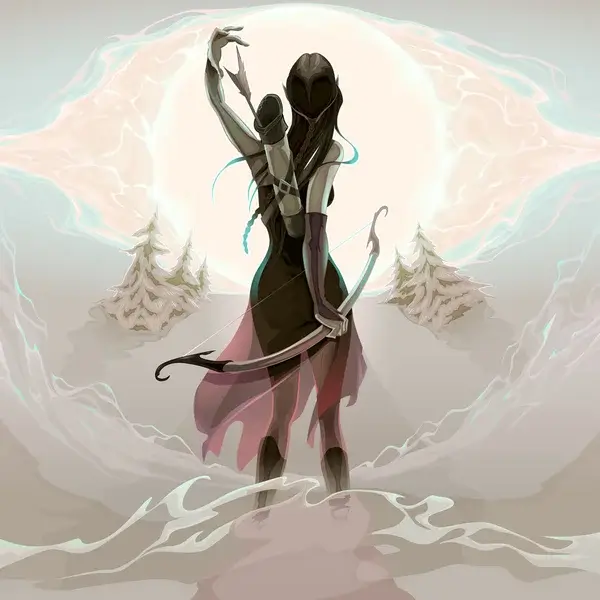
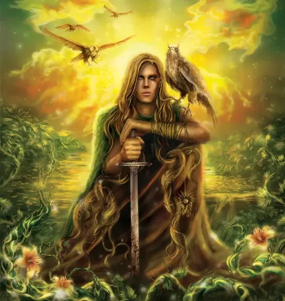
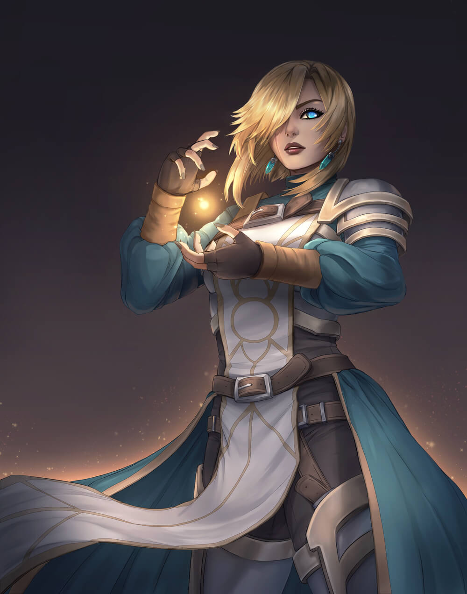

Classes
Mele Fighters
Barbarians
Built to smash, Barbarians aren’t usually very smart. While they don’t usually have too much armor, they have more than enough health to make up for it.
Fighters
The Fighter has trained all his/her life with weapons and can use special maneuvers to gain the upper hand in combat. Heavily armored and with a moderate heath pool, this is a go too starter class.
Monks
As deadly with their fists as they are with a sword, Monks are the martial artists of the world. They learn to focus their soul, their Ki, to stretch the physical boundaries of their bodies.
Paladins
Holy warriors that use heavy armor and the blessings of the divine to vanquish their foes. While they have access to the magic of the celestials, it isn’t very strong so don’t expect to be able to heal others too much.
 

Rangers
The Nomads and Hunters turned hero of the world usually become Rangers. They focus on a specific favored terrain and foe gaining advantages when faced with a challenge related to one of them. They are usually lightly to moderately armored and have a moderate heath pool. They also can earn the companionship of a beast they find during their travels.
Rogues
Keeping to the shadows a Rogue is deadly while unseen, But due to its light armor and small health pool a direct one on one combat with almost any other class would surly be a death sentence.
Damage Spell Casters
Druids
Protectors of nature, Druids draw their magic from the land. Refusing to use metal armor they usually stick to light leather armor for protection. Their specialty magic allows them to transform themselves into animals for a limited time.
Sorcerers
A Sorcerer is born magic. This can be the result of a pact made by your ancestors with a dragon long ago or the forces of pure magic in the world when you were born. Their magic is often focused on controlling the elements.
Warlocks
If you make a deal with a verry powerful being to get magic powers, you are a Warlock. That being is now your patron. While you can’t cast as many spells as the other spell casters, you get other fun gifts from your patron and access to a very powerful attack spell that you can cast whenever you want.
Wizards
The nerds of the magic world, Wizards study the arcane and learn words of magic to be able to cast their spells. They definitely have access to the most and most widely diverse range of spells. They can also cast more but they are the squishiest class with only light armor and almost no health to speak of.
Support Classes
Clerics
The other holy warrior on this list is the Cleric. The Cleric however, while still a formidable mele foe, is not as well armored and has less health than the Paladin. A clerics job is to call down the powers of the celestials to burn evil to a crisp and heal the good.
Bards
The Bard is the band/theater kid who decided to go on an adventure. Their words and music inspire their allies to do better while their insults could literally kill their enemies.